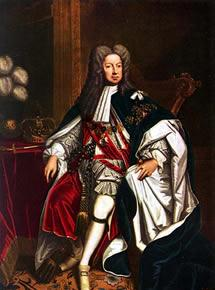
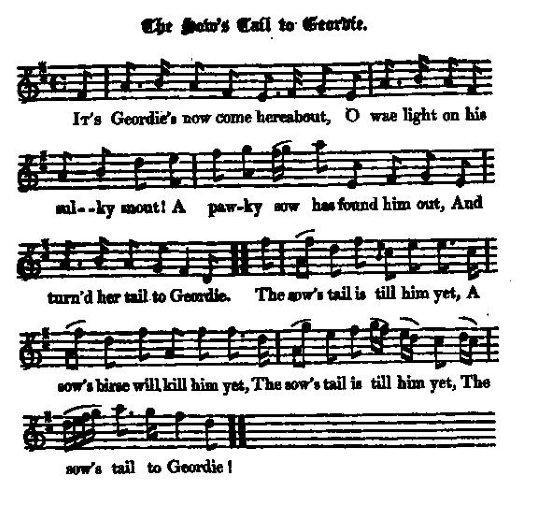
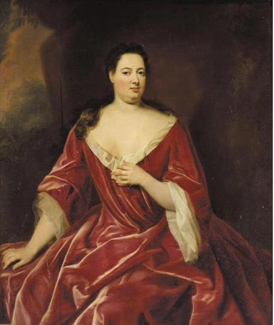
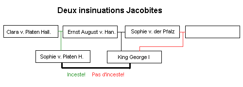

The Sow's Tail to Geordie
La Queue de la truie
Sophie-Charlotte von Platen, Countess of Darlington (1675 -1725)
Tune - Mélodie"The Sow's Tail to Geordie"
from Hogg's "Jacobite Reliques" , part 1, N°55
Sequenced by Christian Souchon



|
“The Sow’s Tail” was first printed in McGlashan’s Collection of Scots Measures, Hornpipes, etc, 1781, as a Scottish Measure. The tune features a second part in which the bow is briefly played behind the bridge, producing a sound not unlike the squeal of a pig. There was a popular bawdy song to the tune in 18th century Scotland, which can be found printed in Hogg’s Jacobite Relics (1819, vol. 1, pg. 91). "’Sow’s Tail’ is a satirical song of ample invective against George I and his mistress Madame Kielmansegge, whom he raised to be Countess of Darlington. She was so large a personage that the English called her 'the elephant'.
The same tune is set in Aird's "Selection of Scotch, English, Irish and Foreign Airs", vol. II, 1782; No. 182, pg. 67 and in Niel Gow’s Strathspey Reels (1784) as 'The Sow's Tail' with symphony and variations (i.e. set but not composed) by the enthusiastic amateur Mr. Nisbet from Dirleton. Source "The Fiddler's Companion" (cf. Liens). |
La "Queue de la Truie" fut imprimée pour la première fois dans le recueil de McGlashan, " Collection of Scots Measures, Hornpipes, etc," en 1781 . Cette mélodie présente la particularité que dans la seconde partie on intercale des notes brèves jouées derrière le chevalet du violon, ce qui produit un son semblable au cri d'un cochon. On chantait sur cet air, dans l'Ecosse du 18ème siècle, un texte paillard que Hogg a reproduit dans ses "Reliques Jacobites" en 1819 (1er volume, page 91). Il s'agit d'un chant satirique rempli d'invectives à l'encontre de George I et de sa maîtresse, Madame Kielmansegge, dont il fit une comtesse de Darlington. Elle avait une stature si imposante que les Anglais l'appelaient "l'Eléphant".
Le même morceau figure dans le recueil d'Aird, "Selection of Scotch, English, Irish and Foreign Airs", vol. II, 1782; No. 182, page 67 et dans celui de Gow "Reels du Strathpey" (1784) sous le titre "La Queue de la Truie avec symphonie et variations (non harmonisées) par un amateur enthousiaste, M. Nisbet de Dirleton". Source "The Fiddler's Companion" (cf. liens). |

|
THE SOW'S TAIL TO GEORDIE
1. It's Geordie's now come hereabout, O wae light on his sulky snout! A pawky sow has found him out, And turn'd her tail to Geordie. CHORUS: The sow's tail is till him yet, A sow's birse will kill him yet, The sow's tail is till him yet, The sow's tail to Geordie! 2. It's Geordie he came up the town, Wi' a bunch o' turnips on his crown; " Aha!" quo' she, " I'll pull them down, And turn my tail to Geordie." The sow's tail is till him yet, &c. 3. It's Geordie he gat up to dance, And wi' the sow to take a prance, And aye she gart her hurdies flaunce, And turn'd her tail to Geordie. The sow's tail is till him yet, &c. 4. It's Geordie he gaed out to hang, The sow came round him wi' a bang: "Aha!" quo' she, "there's something wrung; I'll turn my tail to Geordie." The sow's tail is till him yet, &c. 5. The sow and Geordie ran a race, But Geordie fell and brake his face: " Aha!" quo' she, " I've won the race, And turn'd my tail to Geordie." The sow's tail is till him yet, &c. 6. It's Geordie he sat down to dine, And wha came in but Madam Swine ? " Grumph! Grumph !" quo' she, " I'm come in time, I'll sit and dine wi' Geordie." The sow's tail is till him yet, &e. 7. It's Geordie he lay down to die; The sow was there as weel as he: " Umph! Umph!" quo' she, " he's no for me," And turn'd her tail to Geordie. The sow's tail is till him yet, &c. 8. It's Geordie he gat up to pray, She mumpit round and ran away: " Umph ! Umph!" quo' she, " he's done for aye," And turn'd her tail to Geordie. The sow's tail is till him yet, &c. Source: Jacobite Minstrelsy, published in Glasgow by R. Griffin & Cie and Robert Malcolm, printer in 1828. |
LA QUEUE DE LA TRUIE
1. Que cherche Geordie par ici? Et pourquoi ce museau contrit? La truie rusée qui l'a conquis Tourne le dos à Geordie. REFRAIN: Oui, la truie lui montre sa queue. Les soies de truie, c'est dangereux Oui, la truie lui montre sa queue, Oui sa queue à Geordie! 2. Par la ville Geordie marchait, Sur sa tête un sac de navets; "Ah, je vais les faire tomber Puis ma queue je lui montre!" Oui la truie lui montre sa queue, etc. 3. Geordie s'en est allé danser, Avec sa truie caracoler. Mais elle étale son fessier, Et puis, sa queue lui montre. Oui la truie lui montre sa queue, etc. 4. Geordie pour se pendre est sorti La truie le poursuit à grand bruit: "Je viens consoler tes ennuis!" Sa queue, elle lui montre! Oui la truie lui montre sa queue, etc. 5. Tous deux font la course à cheval. En tombant Geordie s'est fait mal: "Gagné!" dit-elle à son rival "Et ma queue je te montre." Oui la truie lui montre sa queue, etc. 6. Un soir Geordie voulait dîner Quand vint Madame Porcelet "Groin, groin! Je vais t'accompagner Il est l'heure à ma montre." Oui la truie lui montre sa queue, etc. 7. Et le jour où mourut Geordie La truie se trouvait près de lui "Ouf! Ne crois pas que je te suis!" Et sa queue elle montre. Oui la truie lui montre sa queue, etc. 8. Geordie se lève pour prier. Grognant il la voit détaler "Umf, umf! De Geordie c'en est fait". Sa queue elle lui montre. Oui la truie lui montre sa queue, etc. (Trad. Christian Souchon(c)2009) |
|
The humour of this satirical song atones for the grossness of it. Hogg says that when a boy he heard it frequently sung by an old woman, a determined Jacobite, who always accompanied it with the information, that " it was a cried-down sang, but she didna mind that; and that baith it and "O'er Bogie" were cried down at
Edinburgh cross
on the same day." George the First's mistress, Lady Darlington, is here designated by the Sow. This lady was a constant theme for lampoon. Horace Walpole's description of her is amusing.
When contrasting her with another mistress of George's , he says, " Lady Darlington, whom I saw at my mother's in my infancy, and whom I remember by being terrified at her enormous figure, was as corpulent and ample, as the Duchess was long and emaciated. Two fierce black eyes, large and rolling beneath two lofty arched eyebrows ; two acres of cheeks spread with crimson ; an ocean of neck and bosom, that overflowed, and was not distinguished from the lower part of her body, and no part restrained by stays." Such was the form of her who figures as the Sow whose tail was turn'd to Geordie. The air of this song has always been popular, and has afforded infinite scope for variations by the delighted masters of the fiddlestick. Source: "Jacobite Minstrelsy". |
L'humour compense la grossièreté du propos dans ce chant. Hogg dit que lorsqu'il était petit, il l'avait souvent entendu chanter par une vieille femme, une Jacobite convaincue qui ajoutait "Ce chant est interdit, mais ça m'est égal. on l'a interdit, le même jour qu'"O'er Bogie" par proclamation au
Mercat Cross
d'Edimbourg. La maîtresse de Georges I., Lady Darlington y est désigné par l'un de ses surnoms, la Truie. Cette dame était un sujet constant de plaisanterie. Horace Walpole en fait une description amusante.
Soulignant les contrastes qu'elle présentait avec une autre maîtresse de Georges [ la Comtesse de la Schulenburg ], il dit: "Lady Darlington, que j'ai vue chez ma mère quand j'étais petit, me terrifiait, je m'en souviens, par son énorme stature. Elle était aussi ample et corpulente, que la duchesse était longue et maigre. Deux yeux noirs féroces, qui roulaient sous les arcatures hautaines de ses sourcils: deux acres de joues couvertes de rouge; un océan de cou et de poitrine, toujours prêt à déborder et dont on ne voyait pas la limite de séparation avec le bas du corps qui n'était contenu par aucun corset. " Tel était l'aspect de celle désignée ici par la Truie qui montre sa queue à Geordie. L'air de cette chanson a toujours été populaire et a donné lieu à une infinité de variations par les meilleurs maîtres de l'archer rustique. Source: "Jacobite Minstrelsy". . |
|
|
|
|
It is sometimes asserted that the Countess of Darlington, Sophie Charlotte von Platen- Hallermund, wife of Baron Johann Adolf von Kielmansegge, was not only George I's mistress but also
half-sister
.
Her mother, Clara Elisabeth von Weisenbuch, married to Franz Ernst Count von Platen-Hallermund, was the mistress of Ernst-August I, Elector of Hanover (1629 - 1698), George I's father. The Jacobite insinuation that George I was born of adultery, cleared him therefore of the accusation of incest! There is furthermore some likelihood that Königsmarck was slain by order of the same Countess Clara Elisabeth von Platen, who had been once his mistress as well! |
On a dit parfois de la comtesse de Darlington, Sophie de Platen-Hallermund, épouse du Baron Jean-Adolphe de Kielmansegge, qu'elle était non seulement la maîtresse de Georges I, mais aussi
sa demi-soeur
.
En effet, sa mère, Claire Elisabeth de Weisenbuch, mariée au comte François Ernest de Platen-Hallermund, était la maîtresse d'Ernest-Auguste I, Electeur de Hanovre (1629 - 1698), le père de Georges I. Les Jacobites qui insinuaient que Georges I était un enfant adultérin, l'exonéraient donc de l'accusation d'inceste! Il est en outre assez vraisemblable que Koenigsmarck fut assassiné sur les ordres de cette même comtesse Claire Elisabeth de Platen, qui avait été autrefois également sa maîtress! |
|
|
|
